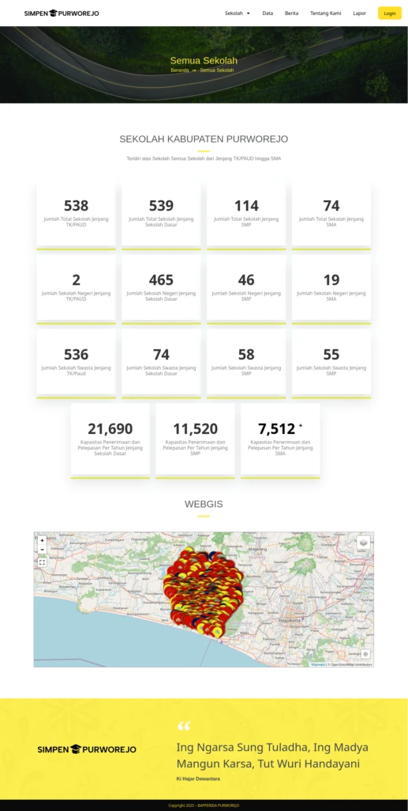
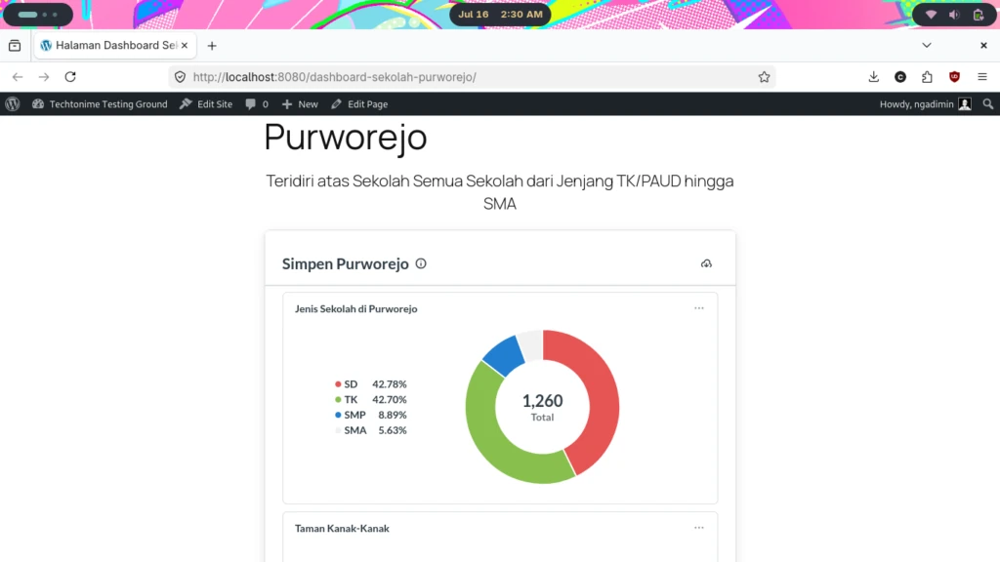

Simpen Purworejo – Web GIS Using WordPress
Dinas Pendidikan Purworejo needed a centralized Information System and GIS mapping dashboard to visualize school data as part of some project done previously. The goal was to give decision-makers actual, real-time geographic data to guide educational policy.

Problem is, this is just an afterthought for survey/mapping project done earlier. High-power data visualization platforms like Metabase or dedicated cloud servers (AWS/GCP) were financially out of the question since we can only afford basic shared hosting service. Also as afterthought, schedule were tight to satisfy requirement.
The Goal
My objective was to architect and deliver a fully functional, open source GIS mapping dashboard capable of running smoothly on low-end shared hosting, without relying on expensive software licenses or high maintenance server environments.
Process and Decision
To bypass our severe server limitations, I had to think creatively using WordPress not just as a blogging platform, but as a lightweight, resource-optimized application framework.WordPress as an Application Framework
Instead of building a custom framework from scratch which would take too long, require more server resources and I don’t posessed required skill without AI help, I leveraged WordPress. It allowed us to keeping the development fast and open-source licensing free of conflicts.
Lightweight Mapping with Waymark & Leaflet
Since we couldn’t host a heavy GIS server, I implemented Waymark, a lightweight WordPress mapping plugin built on top of Leaflet.js. This allowed us to render map overlays, custom markers, and school location shapes on the client-side (the browser) using Javascript, rather than putting heavy processing stress on our cheap shared hosting server. This is important since we had over 1000 school information to display.

Result
We successfully built and launched SIMPEN Purworejo on time.
- Bupati of Purworejo was highly impressed with the interactive map and visual data dashboard.
- As a working Proof of Concept (PoC) within their tiny initial budget, we proved the system’s value. As a direct result, the department approved budget for next year to expand this project further and upgrade to better infrastructure owned by Dinas Komunikasi dan Informatika Kabupaten Purworejo.
What If We Got More Funding
While the heavy plugin architecture initially loaded slowly on shared hosting, it served as the perfect MVP (Minimum Viable Product) to prove the system’s value and secure a larger budget. This successfully paved the way for Phase 2: migrating to a VPS hosting and implementing a decoupled analytics engine using Metabase. Below is our plan to do that.
Unlike shared hosting where we just put our CMS into a space in the server, VPS hosting basically means we rent a virtual computer in data center that can do more than just put some files into server. My plan is using containerization technology so if something happened in our Worpress instance, our Metabase, a business intelligence software isn’t affected. To do this, I am planning to use Docker which means starting by a yml file like this :
version: '3.8'
services:
db:
image: mariadb:10.11
container_name: wp_mariadb
restart: always
environment:
MYSQL_ROOT_PASSWORD: root_password_super_sec
MYSQL_DATABASE: wordpress_db
MYSQL_USER: wp_user
MYSQL_PASSWORD: wp_password_123
volumes:
- db_data:/var/lib/mysql
networks:
- app-network
wordpress:
image: wordpress:latest
container_name: wp_app
restart: always
ports:
- "8080:80"
environment:
WORDPRESS_DB_HOST: db:3306
WORDPRESS_DB_NAME: wordpress_db
WORDPRESS_DB_USER: wp_user
WORDPRESS_DB_PASSWORD: wp_password_123
volumes:
- wp_data:/var/www/html
depends_on:
- db
networks:
- app-network
metabase:
image: metabase/metabase:latest
container_name: metabase_app
restart: always
ports:
- "3000:3000"
environment:
MB_DB_TYPE: mysql
MB_DB_DBNAME: wordpress_db
MB_DB_PORT: 3306
MB_DB_USER: wp_user
MB_DB_PASS: wp_password_123
MB_DB_HOST: db
depends_on:
- db
networks:
- app-network
volumes:
db_data:
wp_data:
networks:
app-network:
driver: bridge
The project utilizes a hybrid architecture combining WordPress and Metabase. WordPress serves as the frontend application and user access layer, leveraging its plugin ecosystem to handle authentication and page structuring. To address the WordPress limitation on dashboard reporting, Metabase is integrated as the dedicated backend Business Intelligence platform to handle raw database queries, data aggregation, and interactive chart rendering.
Tech Stack
To simulate this idea, I run it into my daily used laptop. A Lenovo Thinkpad X230i with dual core Core i3-3210M processor, 120GB SATA SSD, 6GB DDR3L RAM. This laptop is running Fedora Workstation 44 and since security concern and simplicity, I use Podman that use rootless system instead of Docker. There, I just run the yml file above to download and run al needed software before I configure it. In the real scenario, I think VPS hosting with 2 core CPU and 1GB of VRAM is enough for our current situation.
WordPress is still used as content management system for press release, public anouncement, and managing more multimedia content. The only difference is there are no make shift dashboard and web GIS made with Waymark plugin.
Metabase is an open-source business intelligence (BI) and data visualization tool. I chose Metabase Open Source Edition over similar Microsoft Power BI since it gave us the same level of interactive filtering, SQL-based querying, and beautiful GIS map rendering with zero licensing fees. We could host it ourselves, keeping data private and costs predictable.
Result

Because WordPress no longer has to load heavy mapping and database plugins, the front-end website loads almost instantly. Page load time has been reduced to about 80% compared to previous attempt. Unlike our make shift previous attempt, stakeholders now can dynamically filter school data by region, level, and resource availability in real-time as a true business intelligence software. Features that were impossible with the old plugin-based static maps.